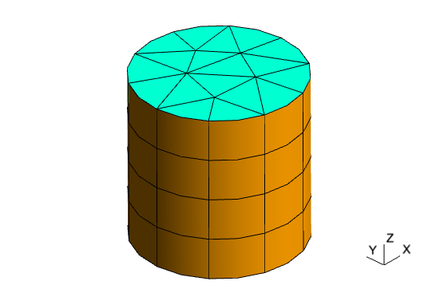
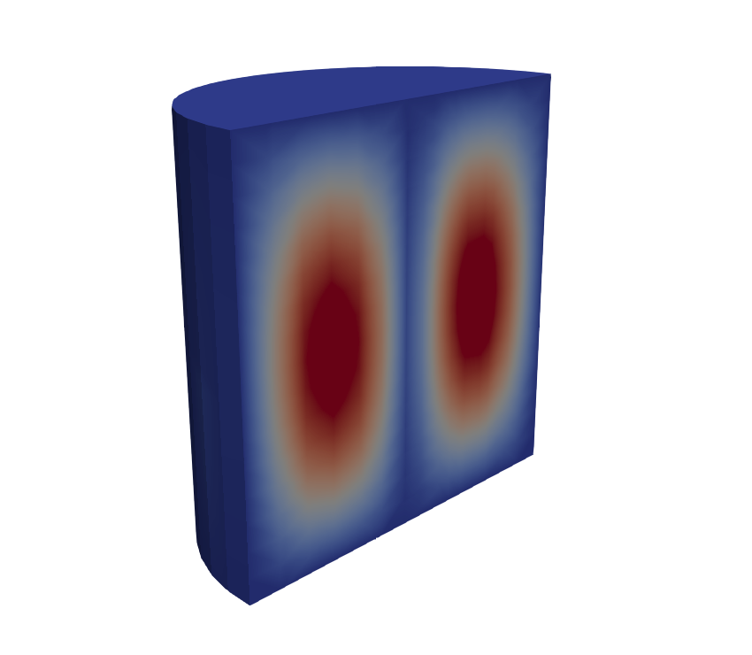
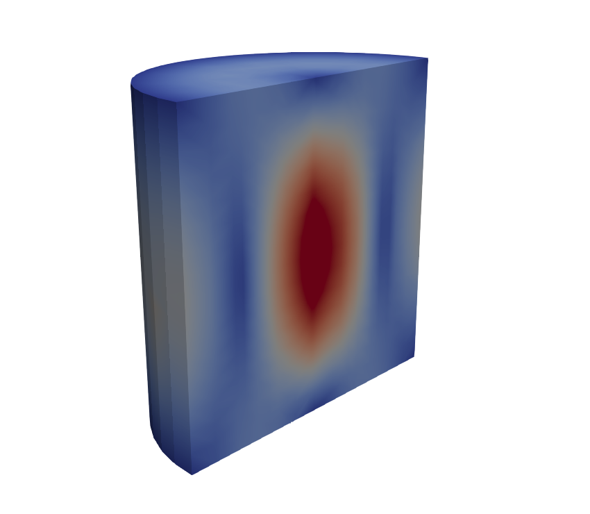
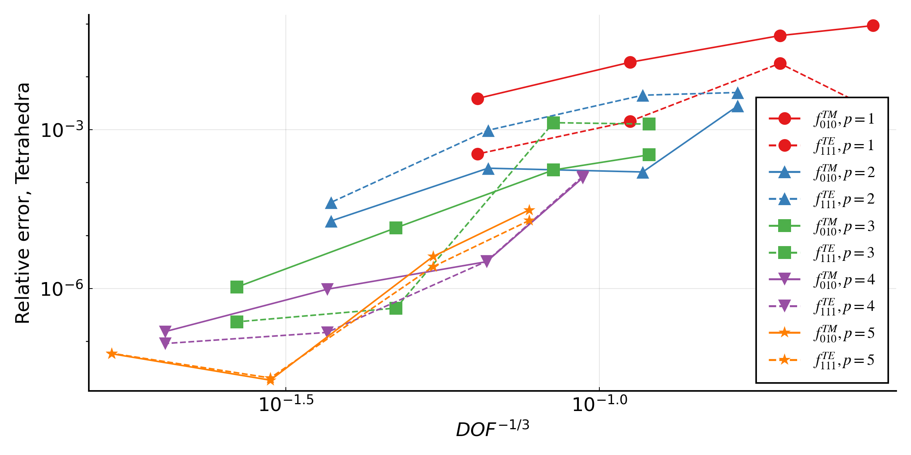
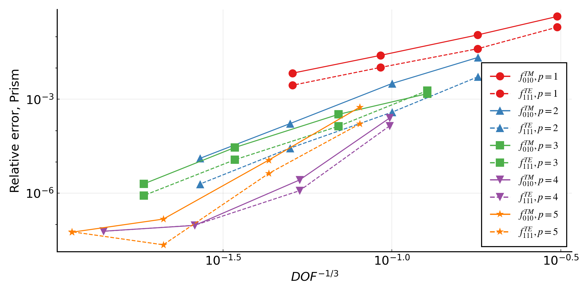
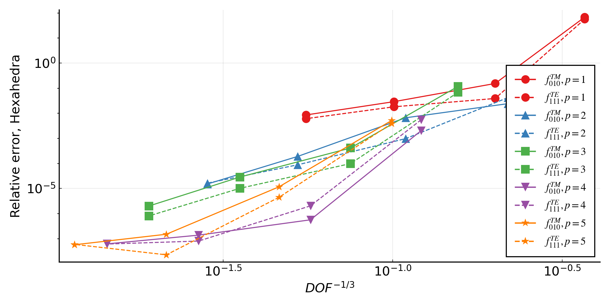

Eigenmodes of a Cylindrical Cavity
The files for this example can be found in the examples/cavity/ directory of the Palace source code.
This example demonstrates Palace's eigenmode simulation type to solve for the lowest frequency modes of a cylindrical cavity resonator. In particular, we consider a cylindrical cavity filled with Teflon ($\varepsilon_r = 2.08$, $\tan\delta = 4\times 10^{-4}$), with radius $a = 2.74\text{ cm}$ and height $d = 2a$. From [1], the frequencies of the $\text{TE}_{nml}$ and $\text{TM}_{nml}$ modes are given by
\[\begin{aligned} f_{\text{TE},nml} &= \frac{1}{2\pi\sqrt{\mu\varepsilon}} \sqrt{\left(\frac{p'_{nm}}{a}\right)^2 + \left(\frac{l\pi}{d}\right)^2} \\ f_{\text{TM},nml} &= \frac{1}{2\pi\sqrt{\mu\varepsilon}} \sqrt{\left(\frac{p_{nm}}{a}\right)^2 + \left(\frac{l\pi}{d}\right)^2} \\ \end{aligned}\]
where $p_{nm}$ and $p'_{nm}$ denote the $m$-th root ($m\geq 1$) of the $n$-th order Bessel function ($n\geq 0$) of the first kind, $J_n$, and its derivative, $J'_n$, respectively.
In addition, we have analytic expressions for the unloaded quality factors due to dielectric loss, $Q_d$, and imperfectly conducting walls, $Q_c$. In particular,
\[Q_d = \frac{1}{\tan\delta}\]
and, for a surface resistance $R_s$,
\[Q_c = \frac{(ka)^3\eta ad}{4(p'_{nm})^2 R_s} \left[1-\left(\frac{n}{p'_{nm}}\right)^2\right] \left\{\frac{ad}{2} \left[1+\left(\frac{\beta an}{(p'_{nm})^2}\right)^2\right] + \left(\frac{\beta a^2}{p'_{nm}}\right)^2 \left(1-\frac{n^2}{(p'_{nm})^2}\right)\right\}^{-1}\]
where $k=\omega\sqrt{\mu\varepsilon}$, $\eta=\sqrt{\mu/\varepsilon}$, and $\beta=l\pi/d$.
The initial Gmsh mesh for this problem, from mesh/cavity.msh, is shown below. We use quadratic triangular prism elements.

There are two configuration files for this problem, cavity_pec.json and cavity_impedance.json.
In both, the config["Problem"]["Type"]
field is set to "Eigenmode", and we use the mesh shown above with a single level of uniform mesh refinement ("UniformLevels": 1). The material properties for Teflon are entered under config["Domains"]["Materials"]. The config["Domains"]["Postprocessing"]["Dielectric]" object is used to extract the quality factor due to bulk dielectric loss; in this problem since there is only one domain this is trivial, but in problems with multiple material domains this feature can be used to isolate the energy-participation ratio (EPR) and associated quality factor due to different domains in the model.
The only difference between the two configuration files is in the "Boundaries" object: cavity_pec.json prescribes a perfect electric conductor ("PEC") boundary condition to the cavity boundary surfaces, while cavity_impedance.json prescribes a surface impedance condition with the surface resistance $R_s = 0.0184\text{ }\Omega\text{/sq}$, for copper at $5\text{ GHz}$.
In both cases, we configure the eigenvalue solver to solve for the $15$ lowest frequency modes above $2.0\text{ GHz}$ (the dominant mode frequencies for both the $\text{TE}$ and $\text{TM}$ cases fall around $2.9\text{ GHz}$ frequency for this problem). A sparse direct solver is used for the solutions of the linear system resulting from the spatial discretization of the governing equations, using in this case a second- order finite element space.
The frequencies for the lowest order $\text{TE}$ and $\text{TM}$ modes computed using the above formula for this problem are listed in the table below.
| $(n,m,l)$ | $f_{\text{TE}}$ | $f_{\text{TM}}$ |
|---|---|---|
| $(0,1,0)$ | –– | $2.903605\text{ GHz}$ |
| $(1,1,0)$ | –– | $4.626474\text{ GHz}$ |
| $(2,1,0)$ | –– | $6.200829\text{ GHz}$ |
| $(0,1,1)$ | $5.000140\text{ GHz}$ | $3.468149\text{ GHz}$ |
| $(1,1,1)$ | $2.922212\text{ GHz}$ | $5.000140\text{ GHz}$ |
| $(2,1,1)$ | $4.146842\text{ GHz}$ | $6.484398\text{ GHz}$ |
| $(0,1,2)$ | $5.982709\text{ GHz}$ | $4.776973\text{ GHz}$ |
| $(1,1,2)$ | $4.396673\text{ GHz}$ | $5.982709\text{ GHz}$ |
| $(2,1,2)$ | $5.290341\text{ GHz}$ | $7.269033\text{ GHz}$ |
First, we examine the output of the cavity_pec.json simulation. The file postpro/pec/eig.csv contains information about the computed eigenfrequencies and associated quality factors:
m, Re{f} (GHz), Im{f} (GHz), Q
1.000000e+00, +2.904507338e+00, +5.809012262e-04, +2.500001089e+03
2.000000e+00, +2.922515466e+00, +5.845032101e-04, +2.499999550e+03
3.000000e+00, +2.922528546e+00, +5.845057488e-04, +2.499999880e+03
4.000000e+00, +3.468921611e+00, +6.937841360e-04, +2.500000721e+03
5.000000e+00, +4.147607819e+00, +8.295219962e-04, +2.499998747e+03
6.000000e+00, +4.147624590e+00, +8.295263017e-04, +2.499995880e+03
7.000000e+00, +4.397698897e+00, +8.795405799e-04, +2.499997775e+03
8.000000e+00, +4.397707609e+00, +8.795424791e-04, +2.499997329e+03
9.000000e+00, +4.630241197e+00, +9.260492789e-04, +2.499997243e+03
1.000000e+01, +4.631850092e+00, +9.263712403e-04, +2.499996752e+03
1.100000e+01, +4.778292314e+00, +9.556584905e-04, +2.499999978e+03
1.200000e+01, +5.002916952e+00, +1.000583103e-03, +2.500000769e+03
1.300000e+01, +5.003637424e+00, +1.000727996e-03, +2.499998774e+03
1.400000e+01, +5.005126280e+00, +1.001026744e-03, +2.499996334e+03
1.500000e+01, +5.291624557e+00, +1.058325143e-03, +2.499999503e+03Indeed we can find a correspondence between the analytic modes predicted and the solutions obtained by Palace. Since the only source of loss in the simulation is the nonzero dielectric loss tangent, we have $Q = Q_d = 1/0.0004 = 2.50\times 10^3$ in all cases.
Next, we run cavity_impedance.json, which adds the surface impedance boundary condition. Examining postpro/impedance/eig.csv we see that the mode frequencies are roughly unchanged but the quality factors have fallen due to the addition of imperfectly conducting walls to the model:
m, Re{f} (GHz), Im{f} (GHz), Q
1.000000e+00, +2.904507340e+00, +7.086038246e-04, +2.049457910e+03
2.000000e+00, +2.922515467e+00, +7.051671704e-04, +2.072214699e+03
3.000000e+00, +2.922528546e+00, +7.051734731e-04, +2.072205452e+03
4.000000e+00, +3.468921613e+00, +8.640197955e-04, +2.007431854e+03
5.000000e+00, +4.147607821e+00, +9.784798616e-04, +2.119414052e+03
6.000000e+00, +4.147624591e+00, +9.784941280e-04, +2.119391720e+03
7.000000e+00, +4.397698899e+00, +1.000289498e-03, +2.198213128e+03
8.000000e+00, +4.397707610e+00, +1.000292504e-03, +2.198210877e+03
9.000000e+00, +4.630241200e+00, +1.054149598e-03, +2.196197451e+03
1.000000e+01, +4.631850095e+00, +1.054707045e-03, +2.195799411e+03
1.100000e+01, +4.778292317e+00, +1.126015851e-03, +2.121769621e+03
1.200000e+01, +5.002916951e+00, +1.085882618e-03, +2.303617807e+03
1.300000e+01, +5.003637428e+00, +1.171361603e-03, +2.135821061e+03
1.400000e+01, +5.005126284e+00, +1.171895768e-03, +2.135482762e+03
1.500000e+01, +5.291624560e+00, +1.207338551e-03, +2.191441950e+03However, the bulk dielectric loss postprocessing results, written to postpro/impedance/domain-Q.csv, still give $Q_d = 2.50\times 10^3$ for every mode as expected.
Focusing on the $\text{TE}_{011}$ mode with $f_{\text{TE},010} = 5.00\text{ GHz}$, we can read the mode quality factor $Q = 2.30\times 10^3$. Subtracting out the contribution of dielectric losses, we have
\[Q_c = \left(\frac{1}{Q}-\frac{1}{Q_d}\right)^{-1} = 2.93\times 10^4\]
which agrees very closely to the analytical result of $Q_c = 2.94\times 10^4$ given in Example 6.4 from [1] for this geometry.
Finally, a clipped view of the electric field (left) and magnetic flux density magnitudes for the $\text{TE}_{011}$ mode is shown below.
 
Mesh convergence
The effect of mesh size can be investigated for the cylindrical cavity resonator using convergence_study.jl. For a polynomial order of solution and refinement level, a mesh is generated using Gmsh using polynomials of the same order to resolve the boundary geometry. The eigenvalue problem is then solved for $f_{\text{TM},010}$ and $f_{\text{TE},111}$, and the relative error, $\frac{f-f_{\text{true}}}{f_{\text{true}}}$, of each mode plotted against $\text{DOF}^{-\frac{1}{3}}$, a notional mesh size. Three different element types are considered: tetrahedra, prisms and hexahedra, and the results are plotted below. The $x$-axis is a notional measure of the overall cost of the solve, accounting for polynomial order.



The observed rate of convergence for the eigenvalues are $p+1$ for odd polynomials and $p+2$ for even polynomials. Given the eigenmodes are analytic functions, the theoretical maximum convergence rate is $2p$ [2]. The figures demonstrate that increasing the polynomial order of the solution will give reduced error, however the effect may only become significant on sufficiently refined meshes.
References
[1] D. M. Pozar, Microwave Engineering, Wiley, Hoboken, NJ, 2012.
[2] A. Buffa, P. Houston, I. Perugia, Discontinuous Galerkin computation of the Maxwell eigenvalues on simplicial meshes, Journal of Computational and Applied Mathematics 204 (2007) 317-333.